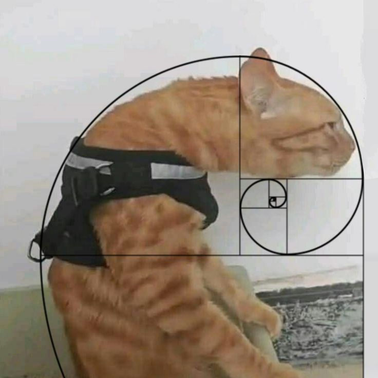

Информация об авторе
Крестин Кирилл Борисович
ЭФБО-05-24
Обо мне: Родился в Москве в 1970-м — ну, или где-то между патчами 6.88 и 7.00, сложно сказать. С ранних лет понял: реальный мир — это баг, а Dota 2 — единственный патч, который хоть как-то всё объясняет. В четыре года уже знал, что такое «фид», хотя мама думала, что это новая каша. Школа? Пропускал ради турниров по локалке. Форма? Носил только худи с логотипом Team Secret — и то, пока не превратилось в артефакт из старых времён. Драки? Только в чате после 0/10 на Anti-Mage. Клей? Да, меня пытались «воспитать», но я уже был в MMR-трансе.
Мой опыт работы
Соло-Мидер / Главный по Дому
Отвечал за контроль линии, фарм, а также за то, чтобы в холодильнике хотя бы раз в неделю появлялась еда. Специализация: Invoker в жизни, доширак в реальности.
Аналитик по Рейтинговым Провалам
Исследовал причины падения MMR с научной точностью: «слив», «токсичный саппорт», «кошка на клавиатуре», «жизнь вообще». Все отчёты заканчивались фразой: «Завтра начну играть нормально».
Контент-мейкер (в голове)
Планировал стримы, записывал клипы, мечтал о подписчиках… но так и не вышел из меню «Найти матч». Зато идеально выучил все фразы Pudge наизусть — на всякий случай.